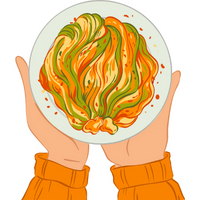

Penne pasta
Ingredients:
- 1 (16-ounce) package (about 4 cups) penne
- 3 tablespoons unsalted butter
- 2 teaspoons minced garlic
- 3 tablespoons all-purpose flour
- 1 cup milk
- 1 cup chicken broth
- 1 cup grated Parmesan cheese
- 2 teaspoons dried parsley
- 1/4 cup water
- garlic salt with parsley flakes or salt to taste
- pepper to taste
- 1/2 cup shredded mozzarella cheese or additional Parmesan cheese optional

Prep Time:
5 mins

Cook Time:
10 mins

Total Time:
15 mins
